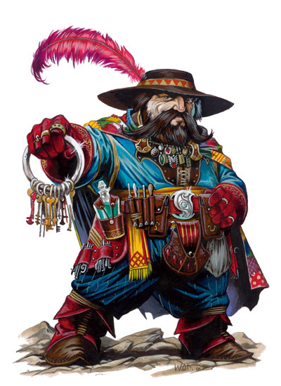

破门者将自己视为宇宙自由的使者，不依赖于任何影响位面原住民的力量，甚至不依赖于动态的魔法力量本身。他们是多位面的流浪者，经常挑战自己的勇气，逃离他人的控制，并释放自我。他们对宇宙自然的本能理解使他们试图采取行动以超越自我。
破门者将他们所见的一切视为艺术，而不是科学。这种选择正确的时机出击、正确的词句表达、正确的姿势移动的能力更多的是出于直觉而不是理性思考。破门者可以来自任何职业，尽管一些游荡者与吟游诗人对破门者职业更容易掌握。
破门者经常是在进行位面旅行，在宇宙复杂结构中采撷并观察每一点细节。
生命色：D6
职业需求
为了成为一名破门者，角色必须满足以下所有要求。
阵营：任何非守序阵营
基本攻击加值：+4
技能：知识（位面）4级，使用魔法装置8级
特殊：为了获得破门者职业资格，角色必须可以在除原住位面以外的两个位面进行旅行。
职业技能
破门者的本职技能有：炼金术（智力）、估价（智力）、平衡感（敏捷）、唬骗（魅力）、攀爬（力量）、手艺（智力）、文书解读（智力）、交涉（魅力）、解除装置（Int）、易容（魅力）、逃脱（敏捷）、伪造文书（智力）、收集信息（魅力）、躲藏（敏捷）、暗语沟通（感知）、威吓（魅力）、方向感（感知）、跳跃（强壮）、知识（所有技能单独选择）（智力）、聆听（感知）、潜行（敏捷）、开锁（敏捷）、表演（魅力）、扒窃（敏捷）、专业（感知）、读唇（智力）、搜索（智力）、滚翻（敏捷）、使用魔法装置（魅力）、绳技（敏捷）。参见《玩家手册》第四章：技能察看相关描述。
每个等级的技能点数：8+智力调整值
职业特征
下列均为破门者进阶职业的职业特征。
擅长武器与防具：破门者擅长所有的简单武器和轻型护甲（但不包括盾牌）。
探知传送门（类法术能力）：破门者获得能力可以以类法术能力使用探知传送门
。每个破门者等级每天可以使用一次。此为这个能力的效果如同等于破门者等级的术士施放的效果。
奖励语言：破门者得到一个一般应用于其他位面的免费语言。这些语言包括深渊语、水族语、水族语、天界语、火族语、炼狱语与土族语。DM可以根据自己的战役宇宙系统扩展这个列表。在第4、7、10级时破门者还可以再次获得奖励语言。
理解力：达到2级以后，破门者理解基本的力与能量的斗争，并可以用这种本能的理解力提高自己的一些技能。破门者在文书解读与使用魔法装置检定上得到+2的内在加值。破门者在搜索或解除魔法陷阱上也有+2的内在加值。
开启传送门（超自然能力）：在第3级时，破门者对于位面力量的理解延伸至魔法传送门的运作，这允许他在没有正确的装置、法术或钥匙的情况下强行打开传送门。破门者作开锁检定时使用智力调整值代替敏捷调整值。传送门通常有以下DC。
传送门 DC
典型使用钥匙的传送门 30
由封印传送门法术封印的传送门 20+施法者等级
神祉创造的传送门 50
开启传送门需要1整轮的时间与成功的检定。这是一个整轮动作。传送门在这之后1D4+1轮才会打开。
召唤法术浸湿（超自然能力）：破门者经常通过禁止他们召唤援军的能力攻击恶魔和魔鬼。每天三次，一个四级或更高的破门者可以创造一个浸湿力场，在所有方向延伸100英尺。召唤或呼唤法术或类法术能力在力场内被压制，但是在力场外召唤的生物可以正常进入力场。浸湿力场可以持续10轮。在浸湿力场启动之前召唤或呼唤的生物不受影响。
雄辩言语（特异能力）：一个5级或更高的破门者可以与多种生物或角色相处，在哄骗、交涉、收集信息、威胁与察言观色检定上得到+2的内在加值。
位面生存（特异能力）：在第6级。破门者可以和谐的与他游览的位面的自然状态相处，它自身会对这些位面自然效果免疫。可以被防护位面效果法术取消的效果都会被这项能力取消。
破门者对于或元素位面“正常的”火焰免疫，但是火属性的攻击与为正常灼热的区域依然会影响到他。由于这项特异能力会造成他自己对某一位面和谐，破门者依然会对来自其他位面的同类型伤害攻击，这种攻击形态并不属于自然秩序的一部分。在其他位面，包括物质位面，火焰依然可以伤害到破门者。
伤害减免：7级以上的破门者将获得5/+1的伤害减免。这意味着角色可以忽略前五点伤害，除非他被+1以上增强加值、被法术或能量形式（火、冷及其他）加持的武器伤害。这项能力不会与其他形式的伤害减免累加。
混乱传送（类法术能力）：在等级8，破门者获得混乱传送能力（如同一个等同于破门者等级的术士施放混乱传送法术）这项能力每天只能使用3次。
异界传送（类法术能力）：在第9级，破门者每天一次可以使用类法术能力从位面移动到另一位面。这个效果如同15级的术士施放异界传送法术。
位面浸湿（类法术能力）：10级的破门者可以散发出力场，它可以压制30英尺内的用于连接其他位面的法术或类法术能力。已经存在的法术与类法术能力不会受到影响；破门者不能仅通过接近就结束敌人的星界投射法术。但是破门者散发出浸湿力场以后释放的法术则会受到影响。例如，30英尺内的对手不能通过任意门法术逃离破门者或通过召唤一级怪物得到支援。
破门者每天可以启动位面浸湿三次。每次持续10轮。
破门者的位面浸湿能力影响以下法术或类法术能力：星界投射、放逐术、闪现术、通神术、异界探知、任意门、驱逐术、幻化灵体、同游灵界、异界之门、跨界传讯、李欧蒙秘藏箱、显现术、集体显现、迷宫术、魔邓肯豪宅、异界传送、界域漩涡、魔绳术、传送术、传送法阵、准确传送术与传送物品。
并且，召唤与呼唤法术只限于本位面生物。幽影子学派法术只能在幽影界起作用。渎神之语、律言、圣言与混沌真言的放逐效果被压制，而其他功能正常作用。
表 3-4：破门者
职业等级 基本攻击加值 强韧检定 反射检定 意志坚定 特殊能力
1 +0 +0 +2 +2 探知传送门，奖励语言
2 +1 +0 +3 +3 理解力
3 +2 +1 +3 +3 开启传送门
4 +3 +1 +4 +4 召唤法术浸湿，奖励语言
5 +3 +1 +4 +4 雄辩言语
6 +4 +2 +5 +5 位面生存
7 +5 +2 +5 +5 奖励语言、伤害减免5/+1
8 +6 +2 +6 +6 混乱传送
9 +6 +3 +6 +6 异界传送
10 +7 +3 +7 +7 奖励语言，位面浸湿